近 7 天 · 一根 15 分 K 同時站上 7 / 14 / 25 / 99 / 120（優化過濾）
前一根收盤完全在這五條均線下方，這一根收盤同時站上。不必過 MA200。進場用訊號下一根開盤。 掃描幣安 U 本位流動永續（加密+股票）近 7 天、244 個合約。訊號區間 11-16 → 11-23（GMT+8）。產生於 2026-11-23 21:50。 圖例每筆上面是 15 分，底下是同一時間的 1 小時圖。圖上的 MA200 只是對照。僅供型態對照，不是進出場建議。
圖例
僅顯示優化過關訊號（站上 MA200 + 前 24h 漲 + 寬度 ≤ 1% + 上影 ≤ 25% + 同幣雙向 8h 冷卻）；黃虛線為訊號 15 分與對應 1 小時 K。
AVAAI 11-22 15:30 · 4h +7.78%
15 分圖 · 黃虛線是同時站上 7/14/25/99/120 的那根（圖上 MA200 只是對照）

1 小時圖 · 黃虛線是上面那根 15 分所在的小時 K

MA200上方 · 前24h +0.8% · 上影 0% · 寬度 0.400% · 量比 1.06× · 15m / 1h / 4h / 8h：-0.24% / +3.81% / +7.78% / +6.75% · 實體穿越
FARTCOIN 11-23 11:00 · 4h +5.92%
15 分圖 · 黃虛線是同時站上 7/14/25/99/120 的那根（圖上 MA200 只是對照）

1 小時圖 · 黃虛線是上面那根 15 分所在的小時 K
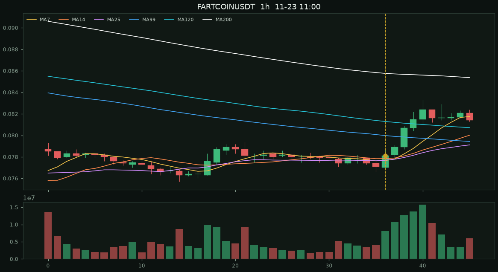
MA200上方 · 前24h +0.3% · 上影 10% · 寬度 0.494% · 量比 1.93× · 15m / 1h / 4h / 8h：+0.64% / +0.51% / +5.92% / +5.53% · 實體穿越
ENA 11-23 11:00 · 4h +3.46%
15 分圖 · 黃虛線是同時站上 7/14/25/99/120 的那根（圖上 MA200 只是對照）
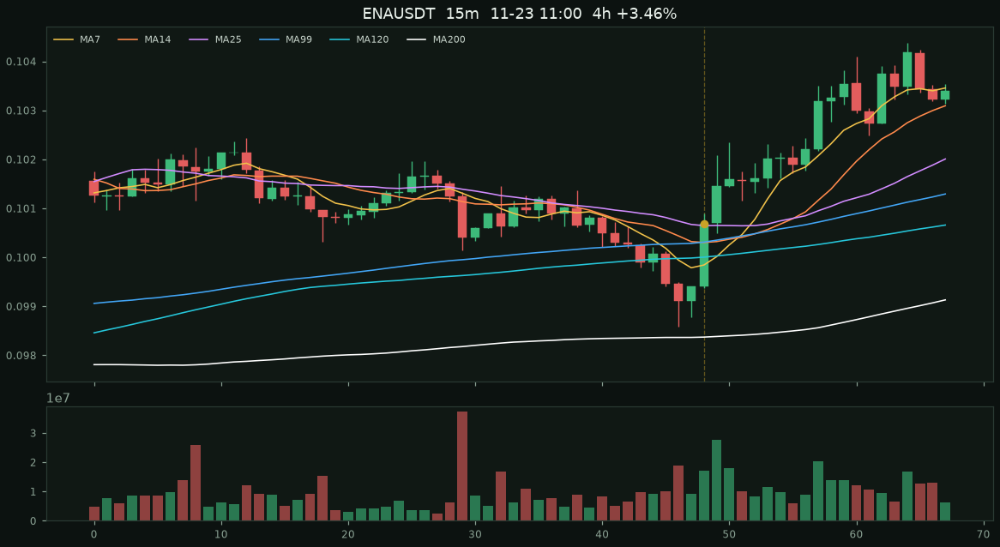
1 小時圖 · 黃虛線是上面那根 15 分所在的小時 K
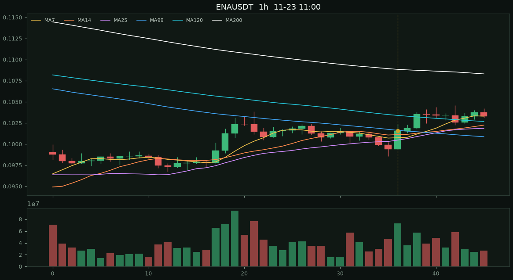
MA200上方 · 前24h +2.0% · 上影 13% · 寬度 0.886% · 量比 1.62× · 15m / 1h / 4h / 8h：+0.74% / +0.90% / +3.46% / +2.35% · 實體穿越
RIVER 11-23 11:00 · 4h +3.21%
15 分圖 · 黃虛線是同時站上 7/14/25/99/120 的那根（圖上 MA200 只是對照）

1 小時圖 · 黃虛線是上面那根 15 分所在的小時 K

MA200上方 · 前24h +1.8% · 上影 17% · 寬度 0.342% · 量比 1.15× · 15m / 1h / 4h / 8h：+0.18% / +0.77% / +3.21% / +4.26% · 實體穿越
WIF 11-23 11:00 · 4h +3.08%
15 分圖 · 黃虛線是同時站上 7/14/25/99/120 的那根（圖上 MA200 只是對照）
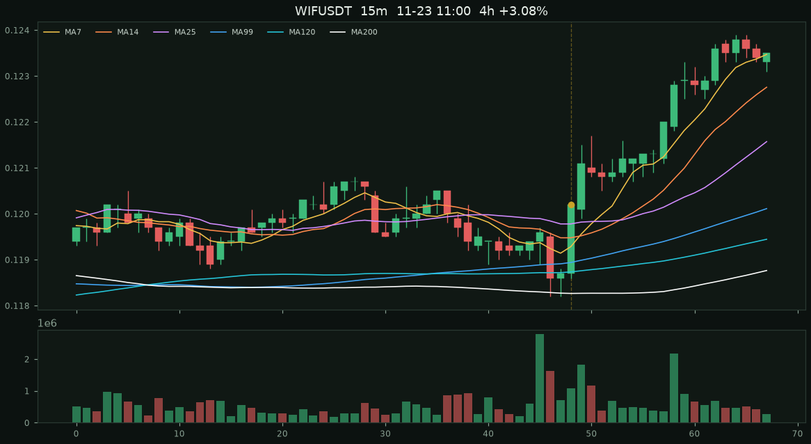
1 小時圖 · 黃虛線是上面那根 15 分所在的小時 K
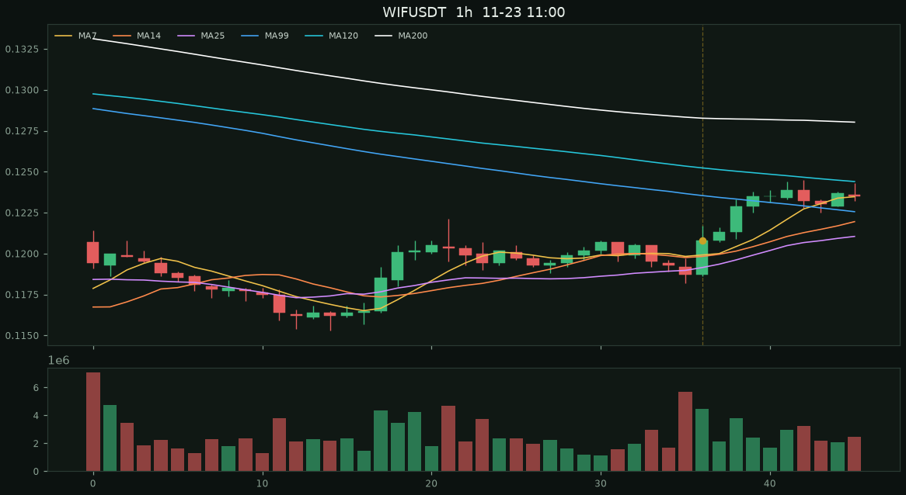
MA200上方 · 前24h +2.0% · 上影 0% · 寬度 0.894% · 量比 1.50× · 15m / 1h / 4h / 8h：+0.83% / +0.67% / +3.08% / +2.75% · 實體穿越
UNI 11-17 09:30 · 4h +2.21%
15 分圖 · 黃虛線是同時站上 7/14/25/99/120 的那根（圖上 MA200 只是對照）

1 小時圖 · 黃虛線是上面那根 15 分所在的小時 K
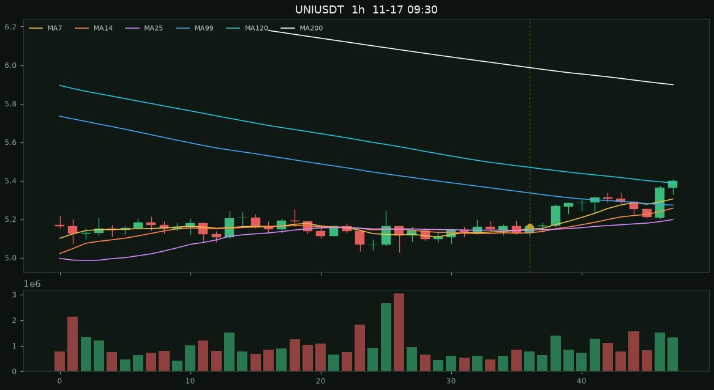
MA200上方 · 前24h +0.1% · 上影 4% · 寬度 0.247% · 量比 0.95× · 15m / 1h / 4h / 8h：-0.10% / -0.12% / +2.21% / +1.37% · 實體穿越
LDO 11-23 11:00 · 4h +1.95%
15 分圖 · 黃虛線是同時站上 7/14/25/99/120 的那根（圖上 MA200 只是對照）
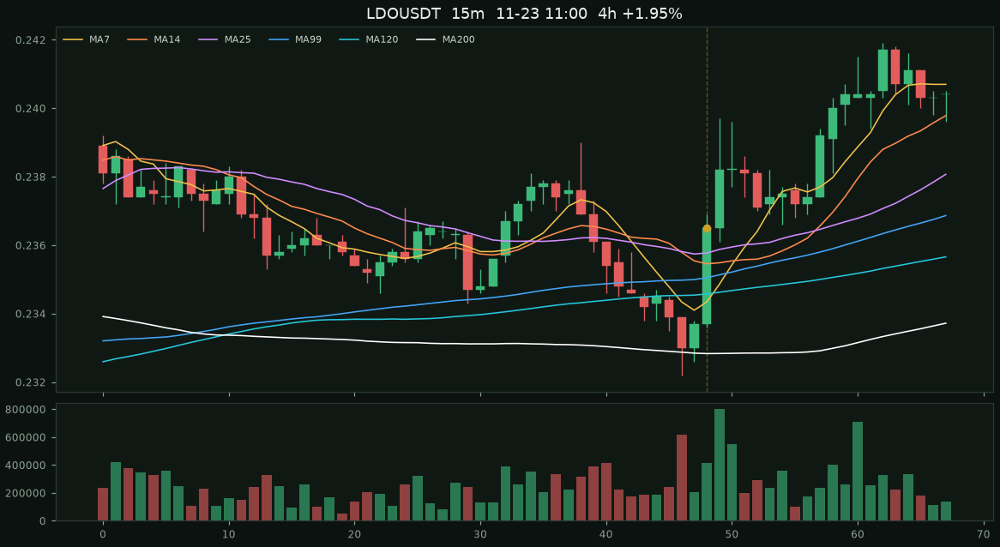
1 小時圖 · 黃虛線是上面那根 15 分所在的小時 K
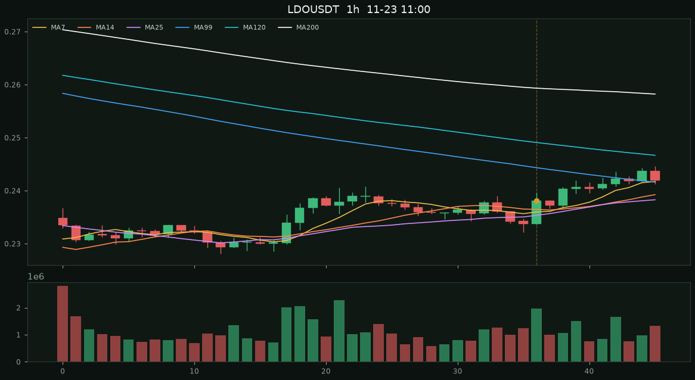
MA200上方 · 前24h +1.5% · 上影 12% · 寬度 0.702% · 量比 1.47× · 15m / 1h / 4h / 8h：+0.72% / +0.25% / +1.95% / +2.49% · 實體穿越
ARB 11-23 11:00 · 4h +1.57%
15 分圖 · 黃虛線是同時站上 7/14/25/99/120 的那根（圖上 MA200 只是對照）
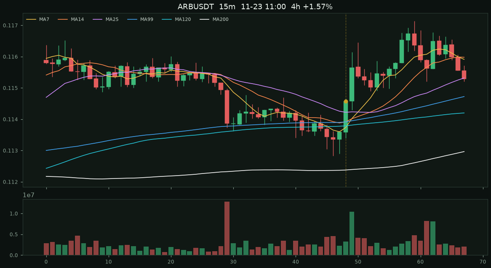
1 小時圖 · 黃虛線是上面那根 15 分所在的小時 K
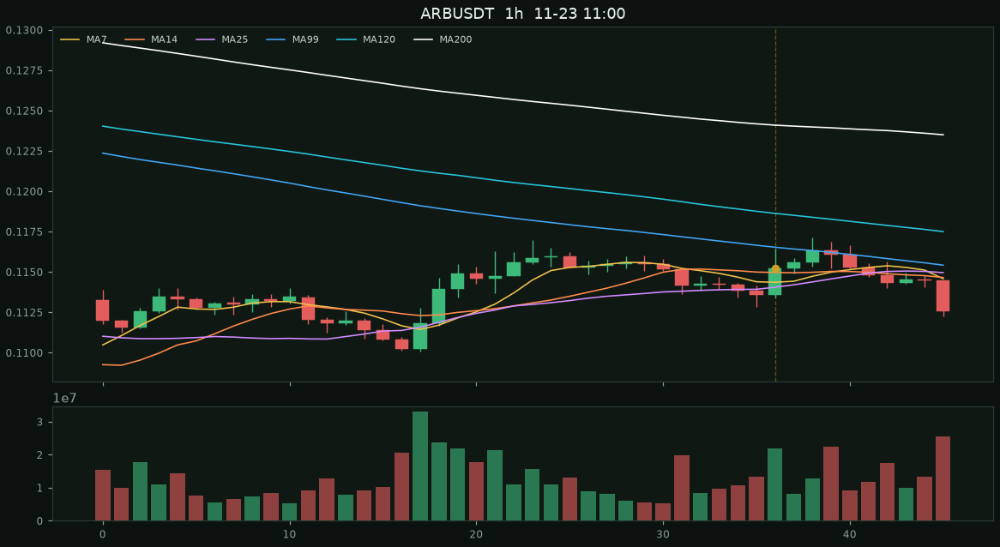
MA200上方 · 前24h +1.4% · 上影 7% · 寬度 0.579% · 量比 1.05× · 15m / 1h / 4h / 8h：+0.93% / +0.38% / +1.57% / -0.30% · 實體穿越
BMNR 11-16 23:30 · 4h -0.91%
15 分圖 · 黃虛線是同時站上 7/14/25/99/120 的那根（圖上 MA200 只是對照）

1 小時圖 · 黃虛線是上面那根 15 分所在的小時 K

MA200上方 · 前24h +1.4% · 上影 6% · 寬度 0.724% · 量比 1.56× · 15m / 1h / 4h / 8h：+0.36% / +0.24% / -0.91% / -1.81% · 實體穿越
MSFT 11-16 23:45 · 4h -1.22%
15 分圖 · 黃虛線是同時站上 7/14/25/99/120 的那根（圖上 MA200 只是對照）

1 小時圖 · 黃虛線是上面那根 15 分所在的小時 K
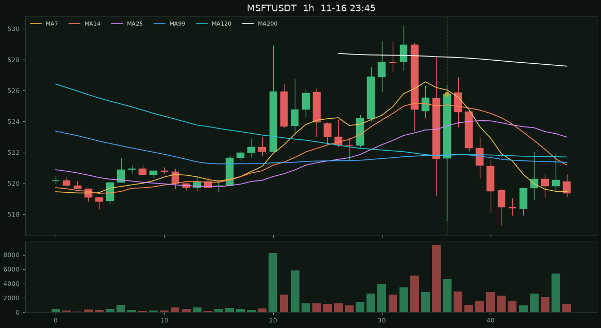
MA200上方 · 前24h +0.3% · 上影 12% · 寬度 0.653% · 量比 0.97× · 15m / 1h / 4h / 8h：-0.38% / -0.24% / -1.22% / -1.06% · 實體穿越
PENGU 11-19 01:15 · 4h -1.23%
15 分圖 · 黃虛線是同時站上 7/14/25/99/120 的那根（圖上 MA200 只是對照）
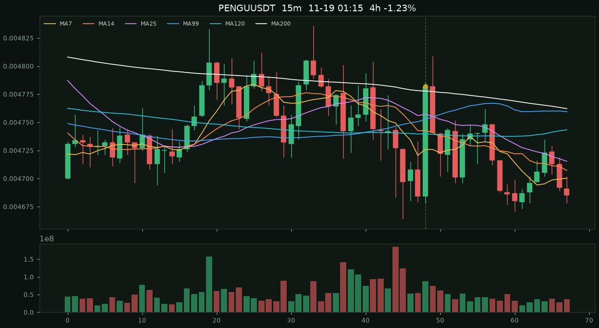
1 小時圖 · 黃虛線是上面那根 15 分所在的小時 K
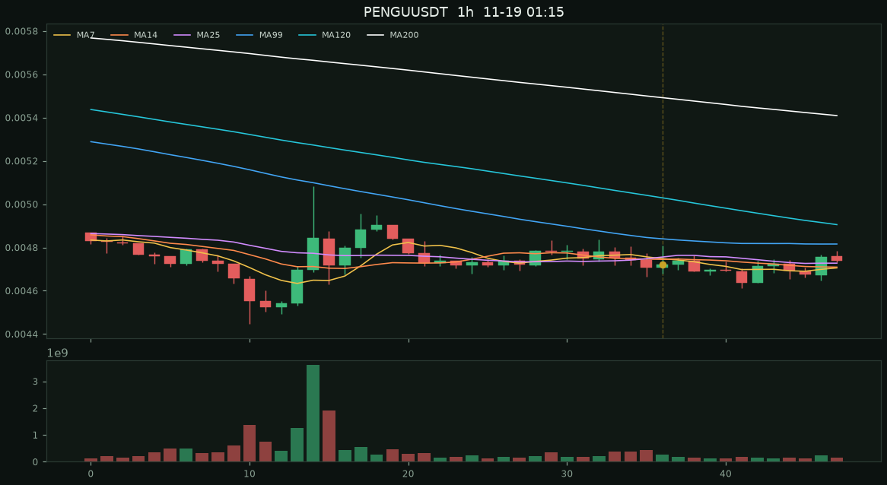
MA200上方 · 前24h +3.7% · 上影 4% · 寬度 0.751% · 量比 1.07× · 15m / 1h / 4h / 8h：-0.86% / -1.69% / -1.23% / -2.36% · 實體穿越
BNB 11-20 02:15 · 4h -1.38%
15 分圖 · 黃虛線是同時站上 7/14/25/99/120 的那根（圖上 MA200 只是對照）
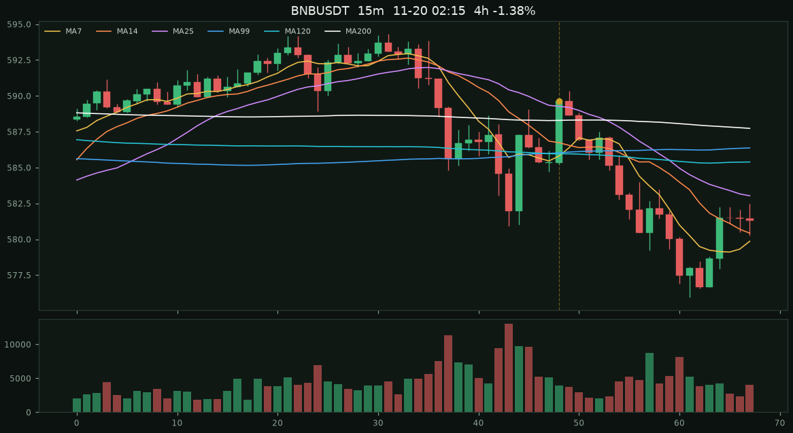
1 小時圖 · 黃虛線是上面那根 15 分所在的小時 K
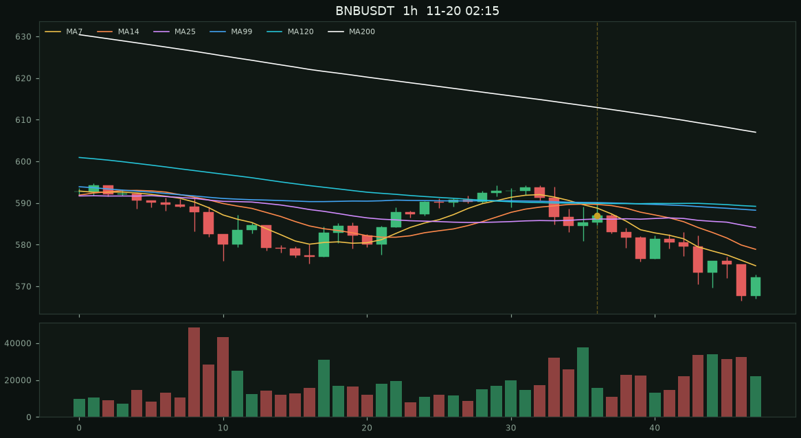
MA200上方 · 前24h +0.3% · 上影 4% · 寬度 0.663% · 量比 0.61× · 15m / 1h / 4h / 8h：-0.17% / -0.43% / -1.38% / -3.16% · 實體穿越
GALA 11-19 20:45 · 4h -1.55%
15 分圖 · 黃虛線是同時站上 7/14/25/99/120 的那根（圖上 MA200 只是對照）
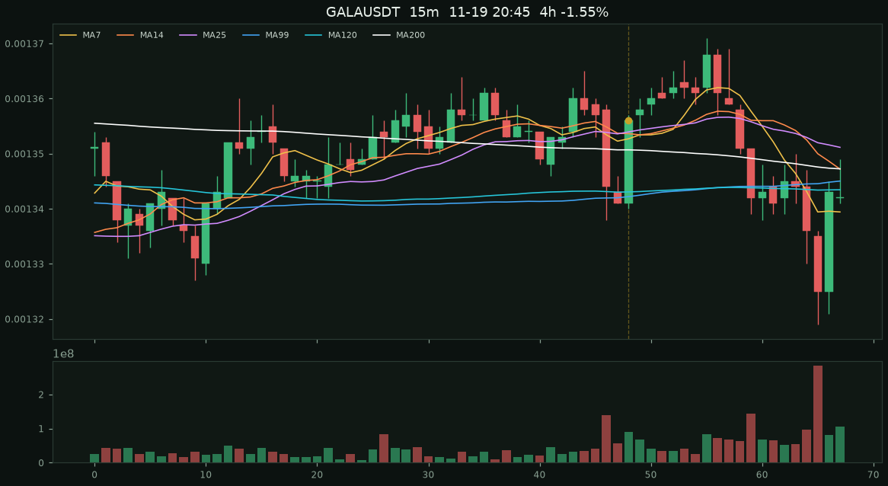
1 小時圖 · 黃虛線是上面那根 15 分所在的小時 K
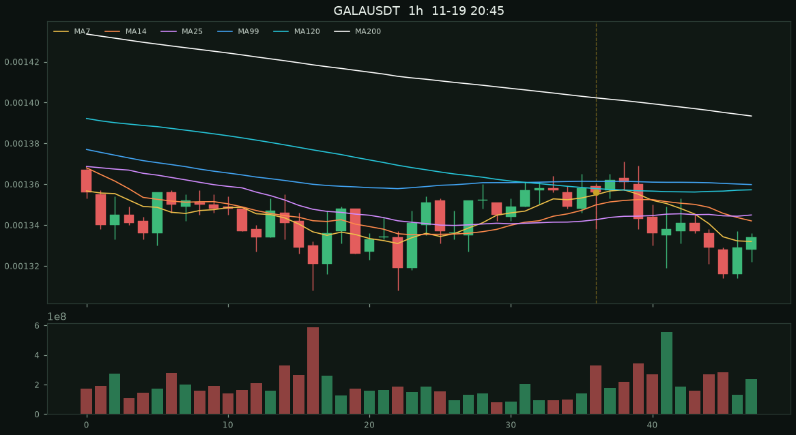
MA200上方 · 前24h +0.8% · 上影 6% · 寬度 0.872% · 量比 2.38× · 15m / 1h / 4h / 8h：+0.07% / +0.37% / -1.55% / -2.06% · 實體穿越
AAVE 11-16 22:00 · 4h -1.60%
15 分圖 · 黃虛線是同時站上 7/14/25/99/120 的那根（圖上 MA200 只是對照）
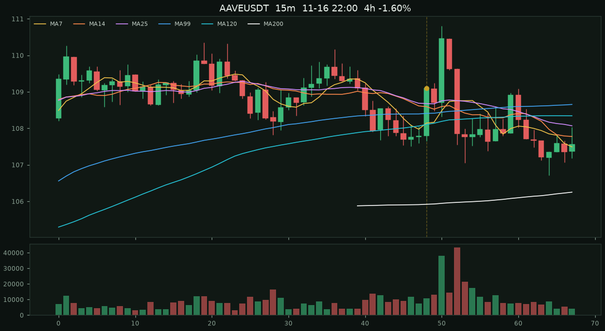
1 小時圖 · 黃虛線是上面那根 15 分所在的小時 K
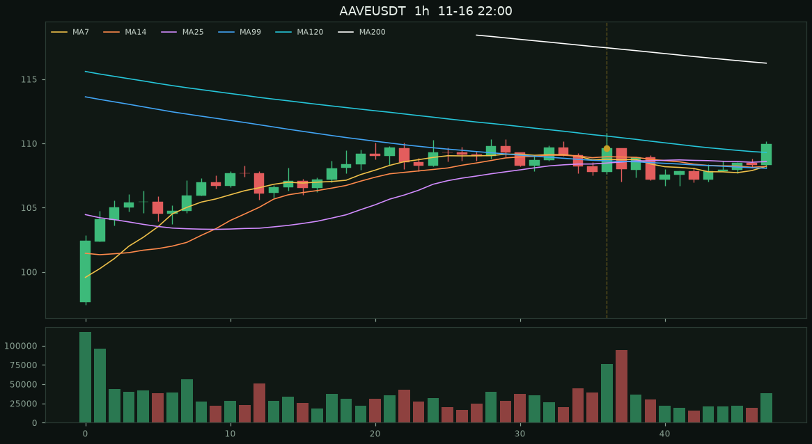
MA200上方 · 前24h +0.1% · 上影 1% · 寬度 0.657% · 量比 1.35× · 15m / 1h / 4h / 8h：-0.35% / -1.14% / -1.60% / -0.64% · 實體穿越
BTC 11-17 23:15 · 4h -1.96%
15 分圖 · 黃虛線是同時站上 7/14/25/99/120 的那根（圖上 MA200 只是對照）
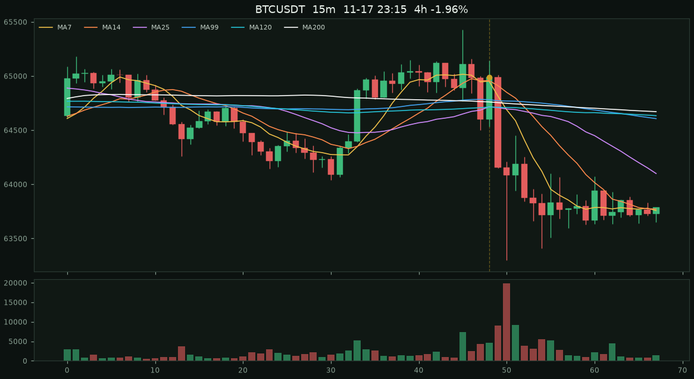
1 小時圖 · 黃虛線是上面那根 15 分所在的小時 K
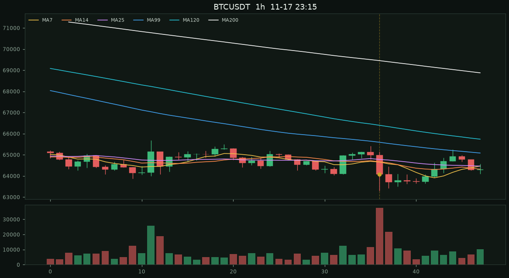
MA200上方 · 前24h +0.4% · 上影 25% · 寬度 0.419% · 量比 1.86× · 15m / 1h / 4h / 8h：-1.28% / -1.71% / -1.96% / -0.06% · 實體穿越
RIVER 11-20 06:15 · 4h -3.91%
15 分圖 · 黃虛線是同時站上 7/14/25/99/120 的那根（圖上 MA200 只是對照）
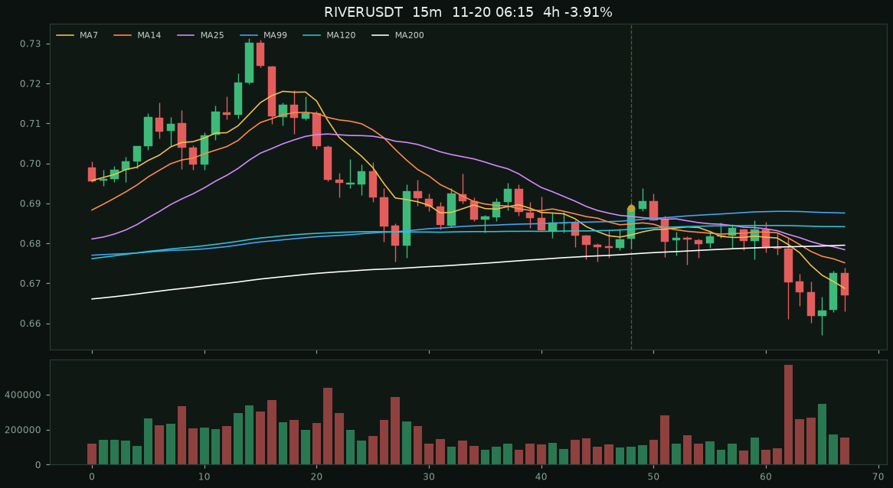
1 小時圖 · 黃虛線是上面那根 15 分所在的小時 K
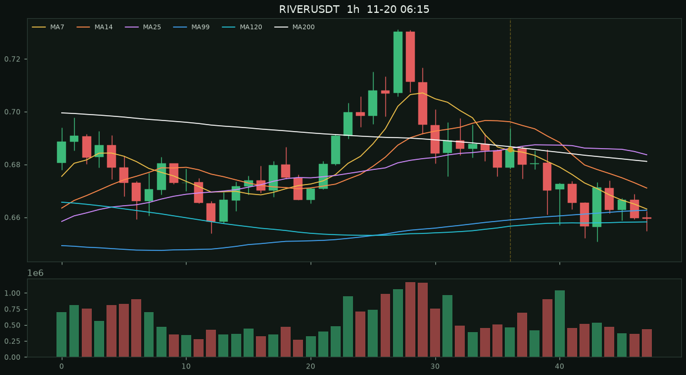
MA200上方 · 前24h +2.9% · 上影 12% · 寬度 0.794% · 量比 0.88× · 15m / 1h / 4h / 8h：+0.26% / -1.07% / -3.91% / -3.51% · 實體穿越
SPCX 11-23 11:00 · 4h +0.67%
15 分圖 · 黃虛線是同時站上 7/14/25/99/120 的那根（圖上 MA200 只是對照）
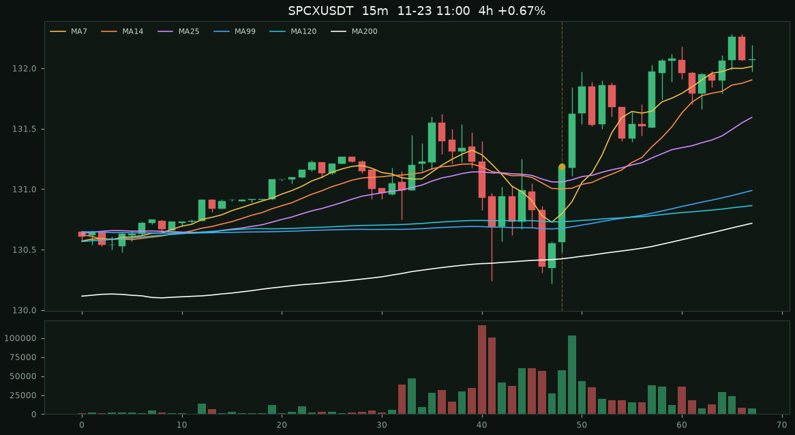
1 小時圖 · 黃虛線是上面那根 15 分所在的小時 K
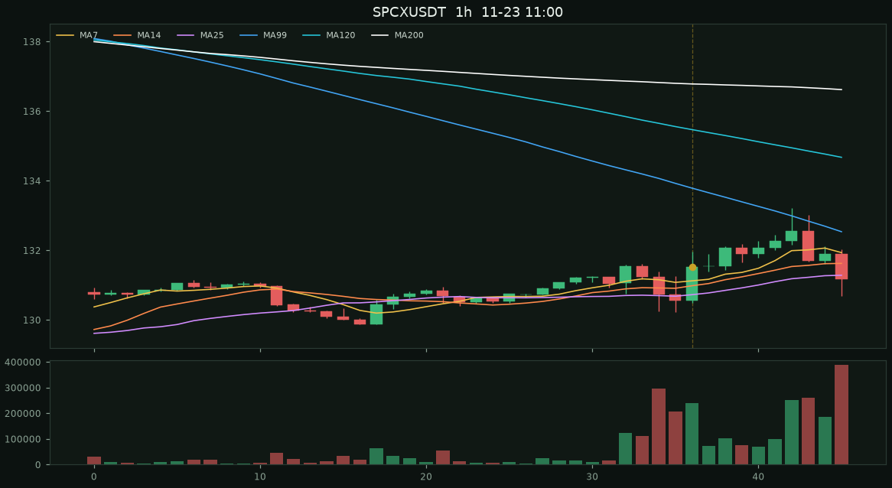
MA200上方 · 前24h +0.1% · 上影 0% · 寬度 0.298% · 量比 1.44× · 15m / 1h / 4h / 8h：+0.34% / +0.52% / +0.67% / +0.34% · 實體穿越
COST 11-16 23:15 · 4h -0.40%
15 分圖 · 黃虛線是同時站上 7/14/25/99/120 的那根（圖上 MA200 只是對照）

1 小時圖 · 黃虛線是上面那根 15 分所在的小時 K

MA200上方 · 前24h +0.0% · 上影 3% · 寬度 0.218% · 量比 1.13× · 15m / 1h / 4h / 8h：-0.47% / -0.23% / -0.40% / +0.05% · 實體穿越
過濾對照
| 條件 | 筆數 | 幣數 | 下一根假突破 | 15m勝率 | 15m均 | 30m勝率 | 30m均 | 1h勝率 | 1h均 | 2h勝率 | 2h均 | 4h勝率 | 4h均 | 8h勝率 | 8h均 |
|---|---|---|---|---|---|---|---|---|---|---|---|---|---|---|---|
| 原始：一根K從帶下收到帶上 | 269 | 148 | 30.5% | 47.6% | -0.036% | 50.6% | +0.029% | 47.9% | -0.053% | 50.9% | +0.056% | 47.5% | -0.037% | 46.2% | -0.155% |
| 實體穿越（開在帶下、收在帶上） | 258 | 145 | 30.2% | 47.7% | -0.037% | 50.8% | +0.028% | 48.4% | -0.069% | 50.0% | +0.034% | 46.8% | -0.056% | 45.0% | -0.182% |
| 帶子寬度 ≤ 1.0% | 220 | 126 | 27.3% | 50.5% | +0.054% | 54.3% | +0.192% | 51.2% | +0.124% | 55.8% | +0.285% | 53.5% | +0.317% | 50.0% | +0.263% |
| 帶子寬度 ≤ 0.4% | 100 | 66 | 28.0% | 47.0% | +0.018% | 55.6% | +0.091% | 49.0% | +0.122% | 52.0% | +0.243% | 48.5% | +0.141% | 51.5% | +0.138% |
| 帶子寬度 > 1.0% | 49 | 41 | 44.9% | 34.7% | -0.441% | 33.3% | -0.714% | 33.3% | -0.858% | 29.2% | -0.977% | 20.8% | -1.624% | 29.2% | -2.021% |
| 放量 ≥ 1.5× | 125 | 91 | 27.2% | 47.2% | -0.135% | 47.2% | -0.152% | 49.6% | -0.205% | 52.8% | -0.056% | 46.7% | -0.239% | 43.4% | -0.173% |
| 實體 + 寬度≤1% + 放量≥1.5× | 88 | 67 | 25.0% | 50.0% | +0.056% | 50.6% | +0.115% | 52.9% | +0.077% | 59.8% | +0.275% | 55.8% | +0.379% | 47.7% | +0.580% |
| 站上 MA200 | 199 | 118 | 28.6% | 43.2% | -0.082% | 49.7% | -0.080% | 42.1% | -0.229% | 46.7% | -0.170% | 45.6% | -0.116% | 47.4% | -0.177% |
| 優化：站上MA200 + 前24h漲 + 8h冷卻 | 51 | 47 | 33.3% | 49.0% | +0.008% | 47.1% | -0.085% | 47.1% | -0.105% | 45.1% | -0.265% | 42.9% | -0.160% | 34.7% | -0.558% |
| 優化(推薦)：同上 + 寬度≤1% + 上影≤25% | 31 | 28 | 25.8% | 61.3% | +0.127% | 64.5% | +0.301% | 61.3% | +0.255% | 67.7% | +0.553% | 62.1% | +0.783% | 44.8% | +0.386% |
寬度 =（最高均線 / 最低均線 − 1）× 100%，用突破前一根的均線。假突破 = 進場那根 15 分收盤又跌回最高均線下方。
優化訊號表（依 4h 報酬排序，最多 80 筆）
| 時間 | 標的 | 進場 | 寬度 | 量比 | MA200 | 前24h | 上影 | 15m | 1h | 4h | 8h |
|---|---|---|---|---|---|---|---|---|---|---|---|
| 11-22 15:30 | AVAAI | 0.005409 | 0.40% | 1.06× | 上方 | +0.8% | 0% | -0.24% | +3.81% | +7.78% | +6.75% |
| 11-23 11:00 | FARTCOIN | 0.0777 | 0.49% | 1.93× | 上方 | +0.3% | 10% | +0.64% | +0.51% | +5.92% | +5.53% |
| 11-23 11:00 | ENA | 0.1007 | 0.89% | 1.62× | 上方 | +2.0% | 13% | +0.74% | +0.90% | +3.46% | +2.35% |
| 11-23 11:00 | RIVER | 0.598 | 0.34% | 1.15× | 上方 | +1.8% | 17% | +0.18% | +0.77% | +3.21% | +4.26% |
| 11-23 11:00 | WIF | 0.1201 | 0.89% | 1.50× | 上方 | +2.0% | 0% | +0.83% | +0.67% | +3.08% | +2.75% |
| 11-17 09:30 | UNI | 5.168 | 0.25% | 0.95× | 上方 | +0.1% | 4% | -0.10% | -0.12% | +2.21% | +1.37% |
| 11-23 11:00 | LDO | 0.2365 | 0.70% | 1.47× | 上方 | +1.5% | 12% | +0.72% | +0.25% | +1.95% | +2.49% |
| 11-23 11:00 | ARB | 0.11458 | 0.58% | 1.05× | 上方 | +1.4% | 7% | +0.93% | +0.38% | +1.57% | -0.30% |
| 11-23 11:00 | SAND | 0.03348 | 0.58% | 1.32× | 上方 | +1.4% | 7% | +0.51% | +0.42% | +1.52% | +0.57% |
| 11-19 08:15 | AIGENSYN | 0.01304 | 0.73% | 2.01× | 上方 | +1.1% | 0% | +0.23% | -0.61% | +1.38% | +1.38% |
| 11-17 19:00 | SAND | 0.03577 | 0.59% | 0.98× | 上方 | +0.2% | 0% | +0.34% | +0.64% | +1.12% | -0.39% |
| 11-23 11:00 | AMAT | 316.15 | 0.60% | 0.45× | 上方 | +0.3% | 12% | +0.61% | +1.02% | +0.93% | +2.24% |
| 11-17 19:00 | INX | 0.003458 | 0.88% | 1.09× | 上方 | +0.6% | 0% | +1.53% | +1.56% | +0.90% | -0.29% |
| 11-17 19:00 | CRV | 0.2058 | 0.60% | 0.94× | 上方 | +0.4% | 0% | +0.44% | +0.78% | +0.68% | -0.53% |
| 11-23 11:00 | SPCX | 131.18 | 0.30% | 1.44× | 上方 | +0.1% | 0% | +0.34% | +0.52% | +0.67% | +0.34% |
| 11-17 19:00 | TAO | 192.25 | 0.89% | 1.10× | 上方 | +0.3% | 0% | +0.24% | +0.82% | +0.56% | -0.91% |
| 11-16 23:45 | COIN | 120.16 | 0.57% | 0.89× | 上方 | +0.3% | 19% | -1.00% | -0.05% | +0.42% | -0.54% |
| 11-23 11:00 | MORPHO | 1.5727 | 0.48% | 0.58× | 上方 | +0.1% | 17% | +0.39% | +0.27% | +0.28% | -0.06% |
| 11-17 19:00 | ONDO | 0.3069 | 0.48% | 1.22× | 上方 | +0.1% | 7% | +0.23% | +0.46% | -0.29% | -1.99% |
| 11-16 23:15 | COST | 1114.3 | 0.22% | 1.13× | 上方 | +0.0% | 3% | -0.47% | -0.23% | -0.40% | +0.05% |
| 11-19 01:15 | LISTA | 0.06937 | 0.60% | 0.64× | 上方 | +1.8% | 5% | -0.30% | -0.61% | -0.48% | +0.76% |
| 11-16 23:30 | BMNR | 16.53 | 0.72% | 1.56× | 上方 | +1.4% | 6% | +0.36% | +0.24% | -0.91% | -1.81% |
| 11-16 23:45 | MSFT | 525.89 | 0.65% | 0.97× | 上方 | +0.3% | 12% | -0.38% | -0.24% | -1.22% | -1.06% |
| 11-19 01:15 | PENGU | 0.004782 | 0.75% | 1.07× | 上方 | +3.7% | 4% | -0.86% | -1.69% | -1.23% | -2.36% |
| 11-20 02:15 | BNB | 589.64 | 0.66% | 0.61× | 上方 | +0.3% | 4% | -0.17% | -0.43% | -1.38% | -3.16% |
| 11-19 20:45 | GALA | 0.001357 | 0.87% | 2.38× | 上方 | +0.8% | 6% | +0.07% | +0.37% | -1.55% | -2.06% |
| 11-16 22:00 | AAVE | 109.09 | 0.66% | 1.35× | 上方 | +0.1% | 1% | -0.35% | -1.14% | -1.60% | -0.64% |
| 11-17 23:15 | BTC | 64989.9 | 0.42% | 1.86× | 上方 | +0.4% | 25% | -1.28% | -1.71% | -1.96% | -0.06% |
| 11-20 06:15 | RIVER | 0.6887 | 0.79% | 0.88× | 上方 | +2.9% | 12% | +0.26% | -1.07% | -3.91% | -3.51% |
| 11-23 18:15 | AAVE | 97.99 | 0.35% | 0.73× | 上方 | +0.5% | 7% | -0.39% | -0.07% | — | — |
| 11-23 18:15 | JCT | 0.001622 | 0.78% | 2.24× | 上方 | +0.3% | 4% | -0.12% | +1.48% | — | — |